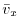
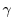
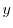
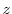

Next: Equations used in the
Up: Optimization of the objective
Previous: Function
Contents
Index
Subsections
MODELLER currently implements a Beale restart conjugate gradients
algorithm [Shanno & Phua, 1980,Shanno & Phua, 1982] and a molecular dynamics procedure with the
leap-frog Verlet integrator [Verlet, 1967].
The conjugate gradients optimizer is usually
used in combination with the variable target function method
[Braun & Gõ, 1985] which is
implemented with the automodel class (Section A.4).
The molecular
dynamics procedure can be used in a simulated annealing protocol that
is also implemented with the automodel class.
Force in MODELLER is obtained by equating the objective function  with internal energy in kcal/mole. The atomic masses are all set to
that of C
(MODELLER unit is kg/mole). The initial velocities
at a given temperature are obtained from a Gaussian random number
generator with a mean and standard deviation of:
with internal energy in kcal/mole. The atomic masses are all set to
that of C
(MODELLER unit is kg/mole). The initial velocities
at a given temperature are obtained from a Gaussian random number
generator with a mean and standard deviation of:
|  |
 |
0 |
(A.7) |
|
|
|
(A.8) |
where
is the Boltzmann constant,
is the mass of one C
atom,
and the velocity is expressed in angstroms/femtosecond.
The Newtonian equations of motion are integrated by the leap-frog Verlet
algorithm [Verlet, 1967]:
|
|
|
(A.9) |
|
|
|
(A.10) |
where
is the position of atom  . In addition, velocity is
capped at a maximum value, before calculating the shift, such that the
maximal shift along one axis can only be cap_atom_shift. The
velocities can be equilibrated every equilibrate steps to
stabilize temperature. This is achieved by scaling the velocities
with a factor
. In addition, velocity is
capped at a maximum value, before calculating the shift, such that the
maximal shift along one axis can only be cap_atom_shift. The
velocities can be equilibrated every equilibrate steps to
stabilize temperature. This is achieved by scaling the velocities
with a factor  :
:
where
is the current kinetic energy of the system.
Langevin dynamics (LD) are implemented as in [Loncharich et al., 1992]. The equations
of motion (Equation A.9) are modified as follows:
where 
is a friction factor (in
) and
a random
force, chosen to have zero mean and standard deviation
MODELLER also implements the self-guided MD [Wu & Wang, 1999] and LD [Wu & Brooks, 2003]
methods. For self-guided MD, the equations of motion (Equation A.9)
are modified as follows:
where
is the guiding factor (the same for all atoms),
the guide
time in femtoseconds, and
a guiding force, set to zero at the
start of the simulation. (Position
is updated in the usual way.)
For self-guided Langevin dynamics, the guiding forces are determined as follows
(terms are as defined in Equation A.13):
A scaling parameter
is then determined by first making an unconstrained
half step:
Finally, the velocities are advanced using the scaling factor:
Where rigid bodies are used, these are optimized separately from the other
atoms in the system. This has the additional advantage of reducing the number
of degrees of freedom.
The state of each rigid body is specified by the position of the center of
mass,
, and an orientation quaternion,
[Goldstein, 1980].
(The quaternion
has 4 components,
through
, of which the first three refer to the
vector part, and the last to the scalar.) The translational and rotational
motions of each body are separated. Each body is translated about its center
of mass using the standard Verlet equations (Equation A.9) using
the force:
where the sum
operates over all atoms in the rigid body, and
is the position of atom
in real space.
For the rotational motion, the orientation quaternions are again integrated
using the same Verlet equations. For this, the quaternion accelerations are
calculated using the following relation [Rapaport, 1997]:
where
is the orthogonal matrix
and
is the first derivative of the angular velocity (in the
body-fixed frame) about axis  - i.e., the angular acceleration. These
angular accelerations are in turn calculated from the Euler equations for
rigid body rotation, such as:
- i.e., the angular acceleration. These
angular accelerations are in turn calculated from the Euler equations for
rigid body rotation, such as:
(Similar equations exist for the 
and 
components.) The angular velocities
are obtained from the quaternion velocities:
The torque,
, in the body-fixed frame, is calculated as
and
is the rotation matrix to convert from world space to body space
and finally the  component of the inertia tensor,
, is given by
component of the inertia tensor,
, is given by
where
is the position of each atom in body space (i.e. relative to
the center of mass, and unrotated), and
is the mass of atom
(taken
to be the mass of one
atom, as above). Similar relations exist for
the
and
components.
The kinetic energy of each rigid body (used for temperature control) is given
as a combination of translation and rotational components:
Initial translational and rotational velocities of each rigid body are set
in the same way as for atomistic dynamics.
The state of each rigid body is specified by 6 parameters: the position
of the center of mass,
, and the rotations in radians about
the body-fixed axes:  ,
, and
. The first
derivative of the objective function
with respect to the center of mass
is obtained from Equation A.22, and those with respect to the
angles from:
,
, and
. The first
derivative of the objective function
with respect to the center of mass
is obtained from Equation A.22, and those with respect to the
angles from:
The transformation matrices
are given as:
The atomic positions
are reconstructed when necessary from the
body's orientation by means of the following relation:
where
is the rotation matrix
Next: Equations used in the
Up: Optimization of the objective
Previous: Function
Contents
Index
Automatic builds
2010-04-21